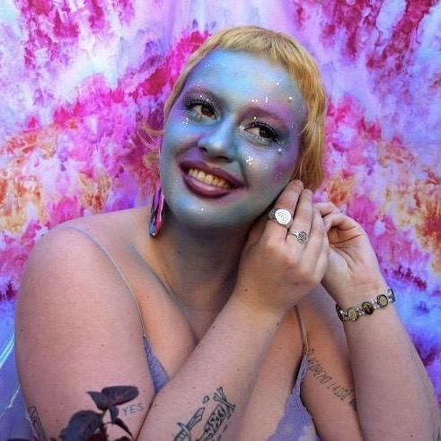

Bella Battersby is a Melbourne based writer, currently finishing their BA in Creative Writing. They specialise in Psychogeography and Feminist flash fiction. They recently took out the 2020 Darebin Mayor's Writing award.
✨ A blog for the zine, Fizgig
✨ My personal website, msbellabatman.com
💎 Winner of the Darebin Mayor's Writing Award 2020, Bird
💎 You can watch me read my piece here
🐬 Creative Writing Editor for RMIT Catalyst Magazine: Within this role I help the main editorial team choose creative pieces to be published in the magazine, edit them myself or help other members edit in a respectful and gentle manner.
🐬 Part of the Editorial Team for n-SCRIBE Working Group: The n-SCRIBE Working Group reviews and selects pieces submitted to the publication, through a blind submission process. I worked alongside local writers and editors.